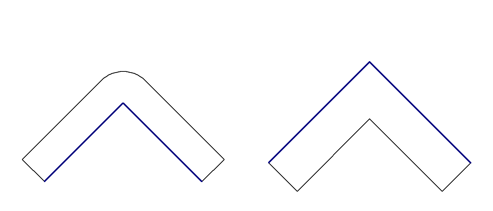
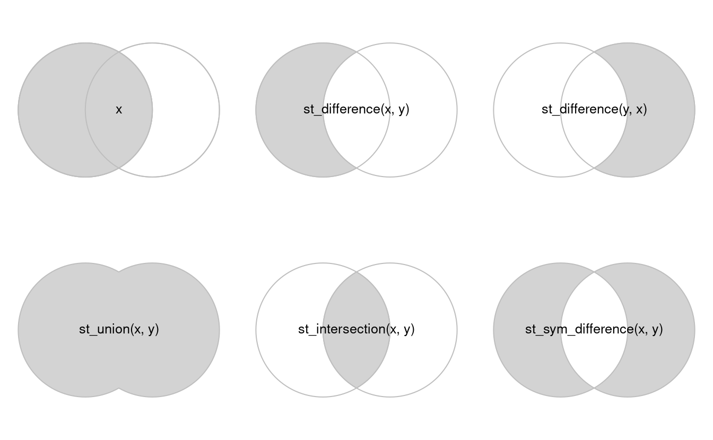
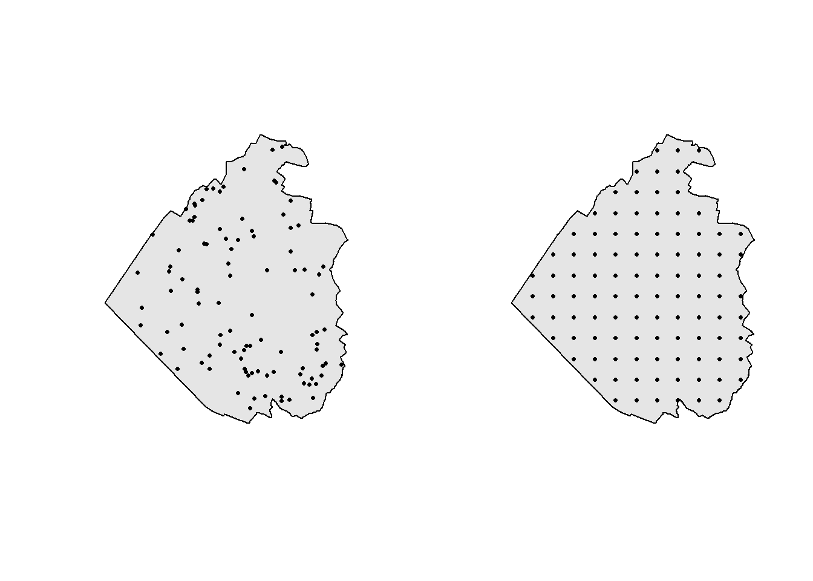
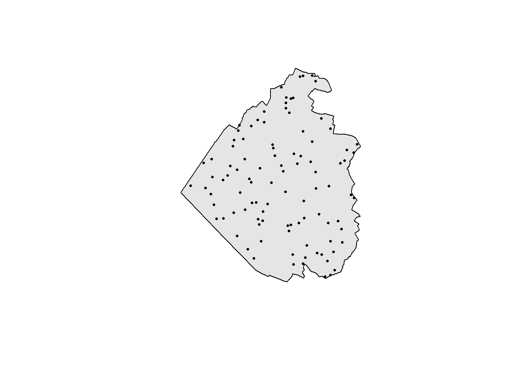

library(sf)5 Tips and tricks for vectors
5.1 Reading vector data
We had a look at the gory details of the internal structure sf objects. However most of the time you will not create such objects on your own but rather rely on the sf package to create the right structure when you import existing GIS data. The sf package is using the GDAL (Geospatial Data Abstraction Library) library to read GIS files, and this means you will be able to import almost all existing GIS vector formats. If you want to check all the available formats, you can use the st_drivers() function. Sometimes you will not get a standard GIS data set but a simple CSV (or Excel) file containing coordinates and related attributes. We will now see how to import these different data types in order to use them with the sf package.
5.1.1 Import a GeoPackage
The GeoPackage format is the best available open format to store vector data. It is based on the SQLite database format which is the most used file-based database nowadays. You can think of it as a special folder containing one or several GIS data sets. Since we normally don’t know in advance if a GeoPackage contains one or more data sets, we first have to inspect it.
st_layers("data/geodata.gpkg")Driver: GPKG
Available layers:
layer_name geometry_type features fields crs_name
1 streets Multi Line String 7690 3 CH1903+ / LV95
2 landcover Multi Polygon 1038 2 CH1903+ / LV95
3 buildings Multi Polygon 14125 2 CH1903+ / LV95
4 municipalities Multi Polygon 7 3 CH1903+ / LV95
5 wtf Polygon 3 0 CH1903+ / LV95
6 cantons 3D Multi Polygon 26 2 CH1903+ / LV95You should not always trust the reported number of features. Some GIS format such as the GeoPackage report this number, some don’t. If the GeoPackage was produced by a software that doesn’t properly implement the standard, the reported number of features could be wrong (but this shouldn’t have any other bad consequence). If you want to be sure to get the correct number, you can use the do_count = TRUE argument of the st_layers() function, but this will be slower.
To read the data, you use the st_read() function, the first argument is the path of the GeoPackage, and the second argument is the layer you want to import. The function will return an sf object. By default you’ll get some information about the data being imported. If you don’t need them, you can use the argument quiet = TRUE.
muni <- st_read("data/geodata.gpkg", "municipalities")Reading layer `municipalities' from data source
`C:\Users\jgu\Desktop\Spatial Data Processing with R\data\geodata.gpkg'
using driver `GPKG'
Simple feature collection with 7 features and 3 fields
Geometry type: MULTIPOLYGON
Dimension: XY
Bounding box: xmin: 2648317 ymin: 1213352 xmax: 2660750 ymax: 1227618
Projected CRS: CH1903+ / LV95streets <- st_read("data/geodata.gpkg", "streets", quiet = TRUE)Let’s check the object we’ve just created. To inspect sf objects, you can either call them directly or use the print() function. The head() and tail() functions will also work since sf objects are based on data frames. By default, only the first 10 rows will be displayed. If you want to see more (or less) rows, use the n argument of the print() function.
muniSimple feature collection with 7 features and 3 fields
Geometry type: MULTIPOLYGON
Dimension: XY
Bounding box: xmin: 2648317 ymin: 1213352 xmax: 2660750 ymax: 1227618
Projected CRS: CH1903+ / LV95
bfs name popsize geom
1 1093 Neuenkirch 7194 MULTIPOLYGON (((2654554 121...
2 1094 Nottwil 4089 MULTIPOLYGON (((2654554 121...
3 1102 Sempach 4186 MULTIPOLYGON (((2656062 121...
4 1095 Oberkirch 5014 MULTIPOLYGON (((2649729 122...
5 1084 Eich 1610 MULTIPOLYGON (((2654640 122...
6 1099 Schenkon 3088 MULTIPOLYGON (((2652397 122...
7 1103 Sursee 10382 MULTIPOLYGON (((2648801 122...print(muni, n = 2)Simple feature collection with 7 features and 3 fields
Geometry type: MULTIPOLYGON
Dimension: XY
Bounding box: xmin: 2648317 ymin: 1213352 xmax: 2660750 ymax: 1227618
Projected CRS: CH1903+ / LV95
First 2 features:
bfs name popsize geom
1 1093 Neuenkirch 7194 MULTIPOLYGON (((2654554 121...
2 1094 Nottwil 4089 MULTIPOLYGON (((2654554 121...The output contains basic information about the data set, and the first features are shown with all the attributes. This municipalities data set is an extract of the swissBOUNDARIES3D data set provided by Swisstopo, the streets data set is an extract of the swissTLM3D data set, also provided by Swisstopo.
5.1.2 Import a Shapefile
If you really need to import a Shapefile, you should also use the st_read() function. Since Shapefiles cannot contain more than one data set, we only need to provide the first argument of the function. A Shapefile consists of several files with different extensions (.shp, .shx, etc.), we use the .shp extension by default when importing.
muni2 <- st_read("data/municipalities.shp", quiet = TRUE)
muni2Simple feature collection with 7 features and 3 fields
Geometry type: POLYGON
Dimension: XY
Bounding box: xmin: 2648317 ymin: 1213352 xmax: 2660750 ymax: 1227618
Projected CRS: CH1903+ / LV95
fid bfs name geometry
1 1 1093 Neuenkirch POLYGON ((2654554 1217985, ...
2 2 1094 Nottwil POLYGON ((2654554 1217985, ...
3 3 1102 Sempach POLYGON ((2656062 1219916, ...
4 4 1095 Oberkirch POLYGON ((2649729 1221262, ...
5 5 1084 Eich POLYGON ((2654640 1224638, ...
6 6 1099 Schenkon POLYGON ((2652397 1224195, ...
7 7 1103 Sursee POLYGON ((2648801 1225672, ...This is actually the same data set as the one in the GeoPackage, however, note that sf is now using polygons instead of multipolygons. This is caused by the fact that the Shapefile format does not distinguish properly between the two types. The GDAL library will use the type polygons in this case, but you can still have a combination of polygons and multipolygons in the same data set.
5.1.3 Import a CSV file with coordinates
If you have a table containing coordinates of point data (e.g. sites or bird sightings), you should use the st_as_sf() function. The first argument should be the data frame containing the data, and you also need to specify the names (or the numbers) of the columns containing the geographic coordinates, and the CRS used. The following data set was extracted from the bird sightings database of the Swiss Ornithological Institute.
obs <- read.csv("data/observations.csv")
head(obs) species_id name date x y
1 4240 Eurasian Blackbird 2022-04-12 2658433 1220946
2 3800 Eurasian Blue Tit 2022-04-12 2658442 1221138
3 4240 Eurasian Blackbird 2022-05-09 2658607 1221189
4 4240 Eurasian Blackbird 2022-05-09 2658597 1221137
5 4240 Eurasian Blackbird 2022-05-09 2658569 1220956
6 3800 Eurasian Blue Tit 2022-05-09 2658476 1220904obs <- st_as_sf(obs, coords = c("x", "y"), crs = "EPSG:2056")
obsSimple feature collection with 530 features and 3 fields
Geometry type: POINT
Dimension: XY
Bounding box: xmin: 2649549 ymin: 1218571 xmax: 2660110 ymax: 1225531
Projected CRS: CH1903+ / LV95
First 10 features:
species_id name date geometry
1 4240 Eurasian Blackbird 2022-04-12 POINT (2658433 1220946)
2 3800 Eurasian Blue Tit 2022-04-12 POINT (2658442 1221138)
3 4240 Eurasian Blackbird 2022-05-09 POINT (2658607 1221189)
4 4240 Eurasian Blackbird 2022-05-09 POINT (2658597 1221137)
5 4240 Eurasian Blackbird 2022-05-09 POINT (2658569 1220956)
6 3800 Eurasian Blue Tit 2022-05-09 POINT (2658476 1220904)
7 4240 Eurasian Blackbird 2022-05-09 POINT (2658514 1221205)
8 3800 Eurasian Blue Tit 2022-05-09 POINT (2658517 1221195)
9 4240 Eurasian Blackbird 2022-05-23 POINT (2658570 1221219)
10 4240 Eurasian Blackbird 2022-05-23 POINT (2658455 1220911)If you have data in WGS84, your geometry columns will probably be named longitude and latitude. In this case remember that longitude corresponds to the x coordinate and latitude to the y coordinate. This can be sometimes confusing because most geographic CRSs have a “reversed” axis order (which means latitude is stored before longitude). To be honest the situation is even more complicated than that, since in geodesy, the convention is to let the x axis point to the North and the y axis to the East (more information: https://wiki.osgeo.org/wiki/Axis_Order_Confusion).
Fortunately, thanks to the great job done by the programmers of the PROJ and GDAL libraries, you don’t really have to think about all this chaos. Just remember the rule mentioned above and you should be safe 99.99% of the time. You should thus use (note the different value for the crs argument):
obs_wgs <- read.csv("data/observations_wgs.csv")
obs_wgs <- st_as_sf(obs_wgs, coords = c("lon", "lat"), crs = "EPSG:4326")5.1.4 Import from a PostGIS database
PostGIS is a famous open-source extension for the PostgreSQL database management system. It allows storing all kind of GIS data inside a database and perform hundreds of typical GIS analyses. The Swiss Ornithological Institute is using PostGIS to store almost all its bird data and a lot of other GIS data sets. If you have a laptop provided by the institute and you already accessed our database via QGIS, you should be able to run the following code. The process will be the same for all PostGIS databases.
First we need to load the RPostgres package which provides function to access PostgreSQL databases (and hence PostGIS, too). There is another package providing similar functionality called RPostgreSQL, but in my opinion the RPostgres is better maintained and I experienced less problems.
After storing all the connection details in some variables, we can finally create a connection to the database using the dbConnect() function.
library(RPostgres)
# Login data
user <- "replace_with_your_login"
password <- "replace_with_your_password"
host <- "dbspatialdata1"
database <- "research"
# Connection to the database
dbcon <- dbConnect(Postgres(), dbname = database, host = host, user = user, password = password)After that we need to import the data with a query, using again the st_read() function. Note that the first argument of the function must be the database connection object. The first possibility consists of importing the whole layer (called table in the database lingo) with all its attributes. This is what we do for the cantons1 data set. We need to use the Id() function to specify the location of the table inside the database. In a PostgreSQL database, a schema is a bit like a folder where we store tables, this allows us to implement some structure inside the database. In our case the table cantonal_boundaries_ch is stored inside the schema perimeter. Note that we don’t need the Id() function if the table are stored in the public schema.
We can also specify a SQL query to import the data, like for the cantons2 data set. Using this kind of query, we are fully flexible. We can for example specify the attributes we want to import, specific data filters, we can even join different tables together (by attributes or even spatially). Once again we have to specify the schema, but this is done a bit differently.
Once we have our sf objects, we still need to disconnect the database. The cantonal_boundaries_ch data set contains all the cantonal boundaries in Switzerland. The data is provided by Swisstopo (swissBOUNDARIES3D).
# Load cantonal boundaries
cantons1 <- st_read(dbcon, layer = Id(schema = "perimeter", table = "cantonal_boundaries_ch"))
cantons2 <- st_read(dbcon, query = "SELECT id, name, geom
FROM perimeter.cantonal_boundaries_ch
WHERE name = 'Fribourg'")
# Disconnect database
dbDisconnect(dbcon)
# Show sf objects
cantons1
cantons25.1.5 Import from WKB
You probably won’t need to import geometries in the WKB format very often. GIS data should not be shared directly in this format. However, since it’s the default format used to store geometries in the PostGIS database, you will maybe get one day a table with attributes and a single WKB column. The following table is a direct extract from a PostGIS database.
obs_wkb <- read.csv("data/observations_wkb.csv")
head(obs_wkb) species_id name date
1 3800 Eurasian Blue Tit 2020-12-07
2 3800 Eurasian Blue Tit 2020-04-13
3 3800 Eurasian Blue Tit 2020-09-12
4 4240 Eurasian Blackbird 2020-10-22
5 4240 Eurasian Blackbird 2020-07-04
6 3800 Eurasian Blue Tit 2020-02-02
wkb
1 01010000200808000000000000DD3D444100000000FCA13241
2 01010000200808000000000000C63D44410000000030A23241
3 01010000200808000000000000E03F44410000000059953241
4 010100002008080000000000001D3E44410000000077A13241
5 010100002008080000000000009E3E4441000000007CA33241
6 01010000200808000000000000E83C4441000000001CA43241Unfortunately it is not possible to use the st_read() function to import such data, and the st_as_sf() function won’t work either. In this case we need to first convert the WKB geometries into sfc objects. To do that we need to add an extra attribute using the structure() function to inform sf that we’re using WKB geometries. After that we can use the st_as_sfc() function. The EWKB = TRUE means that we are using a WKB dialect called EWKB (Extended WKB) which also includes the SRID of the geometries. Once we have a vector of sfc objects, we remove the now useless column containing the WKB geometries and use the st_sf() function to combine the data frame with the geometries.
geom <- st_as_sfc(structure(as.list(obs_wkb$wkb), class = "WKB"), EWKB = TRUE)
obs_wkb <- subset(obs_wkb, select = -wkb)
obs_wkb <- st_sf(obs_wkb, geom)
obs_wkbSimple feature collection with 21 features and 3 fields
Geometry type: POINT
Dimension: XY
Bounding box: xmin: 2652408 ymin: 1217881 xmax: 2654144 ymax: 1221958
Projected CRS: CH1903+ / LV95
First 10 features:
species_id name date geom
1 3800 Eurasian Blue Tit 2020-12-07 POINT (2653114 1221116)
2 3800 Eurasian Blue Tit 2020-04-13 POINT (2653068 1221168)
3 3800 Eurasian Blue Tit 2020-09-12 POINT (2654144 1217881)
4 4240 Eurasian Blackbird 2020-10-22 POINT (2653242 1220983)
5 4240 Eurasian Blackbird 2020-07-04 POINT (2653500 1221500)
6 3800 Eurasian Blue Tit 2020-02-02 POINT (2652624 1221660)
7 4240 Eurasian Blackbird 2020-04-10 POINT (2653388 1218372)
8 3800 Eurasian Blue Tit 2020-10-22 POINT (2653088 1221156)
9 3800 Eurasian Blue Tit 2020-10-22 POINT (2652943 1221333)
10 3800 Eurasian Blue Tit 2020-10-22 POINT (2653180 1220958)5.2 Writing vector data
When you create or modify a GIS data set with sf you’ll need to export it to some standard GIS format if you want to share it with colleagues, open it in another GIS software, or simply archive it. I do not recommend using R workspaces (.Rdata files) to share or store GIS data. For exporting vector data, we are going to use the st_write() function. Like the st_read() function, it uses the GDAL library, so you’ll be able to export in many different formats. You can specify the format explicitly, otherwise sf will try to guess it based on the file extension. It is also possible to export to a PostGIS database using an approach similar to the one we used for importing.
5.2.1 Export to GeoPackage
For a GeoPackage, you need to specify the name of the GeoPackage first (it will be automatically created if it doesn’t exist) and the name of the data set that will be stored inside the GeoPackage. If you specify a GeoPackage that already exists, the data set will be added to it as a new table.
st_write(obs, "export/birds.gpkg", "observations")Writing layer `observations' to data source `export/birds.gpkg' using driver `GPKG'
Writing 530 features with 3 fields and geometry type Point.obs2 <- obs[1:10,]
st_write(obs2, "export/birds.gpkg", "observations2", quiet = TRUE)
st_layers("export/birds.gpkg")Driver: GPKG
Available layers:
layer_name geometry_type features fields crs_name
1 observations Point 530 3 CH1903+ / LV95
2 observations2 Point 10 3 CH1903+ / LV95If you want to delete a data set, you can use the st_delete() function. Think twice before doing it, there will be no warning!
st_delete("export/birds.gpkg", "observations2")Deleting layer `observations2' using driver `GPKG'5.2.2 Export to CSV
It is usually a better option to export a GeoPackage, but sometimes you’ll still need to export your data to CSV. When you share such a file, always add metadata about the CRS you used. Since CSV is not a GIS format, we need a way to store the geometries. This is easy for point data since we can always add columns with the coordinates. For line and polygon data we need to find another solution, for example store the WKT in a new column.
We can use the layer_options argument of the st_write() function to export point data with the additional columns for the x and y coordinates. These additional options are sent directly to the GDAL library which does the export.
st_write(obs, "export/birds.csv", layer_options = "GEOMETRY=AS_XY")Writing layer `birds' to data source `export/birds.csv' using driver `CSV'
options: GEOMETRY=AS_XY
Writing 530 features with 3 fields and geometry type Point.For polygon and line data, we can do something similar to get a new column with the WKT geometry. Since commas are used in the WKT format, it might be a good idea to use another separator for the CSV file. Note that you’ll probably get into troubles if your geometries have a lot of vertices.
st_write(muni, "export/municipalities.csv", layer_options = c("GEOMETRY=AS_WKT", "SEPARATOR=SEMICOLON"), quiet = TRUE)5.2.3 Export to Shapefile
Really??? Please don’t!
5.3 Basic geometric computations
In this section we’ll see how to perform some basic geometric computations on spatial data, such as computing area, perimeter, length and centroids. We’ll also learn how to display the coordinates of sf geometries.
5.3.1 Areas and lengths
As a first example, let’s how we can compute the area and perimeter of polygons, or the length of lines.
st_area(muni)Units: [m^2]
[1] 26267403 14834107 11676584 10954968 9218391 7710103 6050585st_perimeter(muni)Units: [m]
[1] 29717.62 17281.70 16758.24 15754.38 14897.75 15462.88 13398.87head(st_length(streets))Units: [m]
[1] 1915.1026 378.9425 345.9435 1836.5854 901.2759 232.4974Note that the results always have a unit of measurement. This is a feature that is provided by sf and will occur will all functions giving some sort of measurement. This is compatible with the units package which allows easy conversions between different unit types. However this can sometimes be a problem if you need a “raw” value. In this case you can use the as.numeric() function to remove the units.
Note
The st_perimeter() function was not available in older versions of the sf package. The lwgeom package was needed to perform this computation.
If you use unprojected data (i.e., with a geographic CRS), sf will automatically use the s2 library to compute areas, perimeters and lengths.
st_area(World[1:5,])Units: [m^2]
[1] 6.524913e+11 2.965392e+10 2.319313e+12 1.250265e+12 1.223080e+13st_perimeter(World[1:5,])Units: [m]
[1] 4552620.2 831564.7 6782465.9 6031452.9 29709970.9The s2 library performs its computations on a spheroid. For areas and lengths, it is possible to obtain a better approximation by using an ellipsoid. You can do this by turning off the s2 library with the sf_use_s2(FALSE) function. In this case, sf will automatically use equivalent functions provided by the lwgeom1 package. These functions use algorithms from the GeographicLib library which are to my knowledge the most precise approximations you can currently get. Note that the st_perimeter() function won’t be available if you do that. You’ll need to transform the polygons to lines first (see Section 5.5 for details), and then use the st_length() function. Don’t forget to reactivate s2 (using the sf_use_s2(TRUE) function) when you’re done.
sf_use_s2(FALSE)Spherical geometry (s2) switched offst_area(World[1:5,])Units: [m^2]
[1] 6.522790e+11 2.969314e+10 2.315867e+12 1.245470e+12 1.233046e+13st_length(st_cast(World[1:5,], "MULTILINESTRING"))Units: [m]
[1] 4553652.7 831351.2 6779702.5 6020175.2 29826094.4sf_use_s2(TRUE)Spherical geometry (s2) switched on
Important
You should normally not turn s2 off. Computing areas and lengths (and distances, as we will see later) are probably the only valid cases where turning s2 off is a good idea. For all other computations based on geographic CRSs you should NOT deactivate s2, otherwise you’ll get results that will most probably be wrong.
5.3.2 Centroids
Computing the centroid of polygons is another useful operation that is easily computed using the st_centroid() function.
muni_centroid <- st_centroid(muni)Warning: st_centroid assumes attributes are constant over geometriesplot(st_geometry(muni))
plot(st_geometry(muni_centroid), add = TRUE)
For this example, you can safely ignore the warning about attributes assumed to be constant. The output of the st_centroid() function will be a point data set with the same number of features and the same attributes as the data set used to compute the centroids. The function simply warns you that if the value of some attribute is not constant for some polygon, then the value of this attribute for the centroid probably doesn’t make a lot of sense.
Tip
Centroids can be used to place labels inside polygons, but don’t forget that polygons with strange shapes may not contain their own centroid. If you need to be sure that the point will be inside the polygon, use the st_point_on_surface() function.
5.3.3 Extract coordinates
Sometimes we also need to know the coordinates of the sf objects we’re using. For points we of course get the coordinates of the points, for lines and polygons we get the coordinates of the vertices, with additional columns showing how to reconstruct the features (check the st_coordinates() help page to understand the meaning of L1, L2 and L3).
st_coordinates(muni_centroid) X Y
[1,] 2657961 1217280
[2,] 2653276 1220227
[3,] 2657334 1221089
[4,] 2650683 1222874
[5,] 2655114 1223114
[6,] 2652705 1225584
[7,] 2650517 1225371head(st_coordinates(muni)) X Y L1 L2 L3
[1,] 2654554 1217985 1 1 1
[2,] 2654481 1218031 1 1 1
[3,] 2654492 1218051 1 1 1
[4,] 2654495 1218063 1 1 1
[5,] 2654493 1218067 1 1 1
[6,] 2654494 1218083 1 1 15.3.4 Common pitfalls
Unfortunately geometric computations are not always that easy… Let’s have a look at another example. We load another polygon layer and try to compute the area of each polygon.
bug <- st_read("data/geodata.gpkg", "wtf", quiet = TRUE)
plot(bug, col = 1:nrow(bug))
st_area(bug)Units: [m^2]
[1] 547988.3 200939.1 0.0Oops, these polygons look big enough but one of them seems to have an area of 0… Why is this happening? To understand the problem, we first need to talk a bit about geometric validity…
5.4 Geometric validity
When we had a look a the vector data model, we discovered the Simple Feature standard but we forgot an important part: geometric validity. Validity is defined a bit differently depending on the geometry engine used for the computations. First the good news: points are always valid! Lines are always valid for the GEOS engine used by sf but they are considered invalid by QGIS if they have self-intersections (such lines are called non-simple). Polygons are definitely invalid if they have self-intersections (like our example). The other invalid cases are shown on this website: https://postgis.net/docs/using_postgis_dbmanagement.html#Valid_Geometry. Using invalid geometries can be problematic for some analyses, such as computing areas.
Normally we should expect official data sets to be valid but this is often not the case. You can check the validity of each feature using the st_is_valid() function. If you want a short description of the problems, you can add the argument reason = TRUE.
bugSimple feature collection with 3 features and 0 fields
Geometry type: POLYGON
Dimension: XY
Bounding box: xmin: 2656313 ymin: 1219730 xmax: 2659317 ymax: 1221618
Projected CRS: CH1903+ / LV95
geom
1 POLYGON ((2656382 1221396, ...
2 POLYGON ((2656903 1220285, ...
3 POLYGON ((2658317 1221618, ...st_is_valid(bug)[1] TRUE TRUE FALSEst_is_valid(bug, reason = TRUE)[1] "Valid Geometry"
[2] "Valid Geometry"
[3] "Self-intersection[2658817 1221117.875]"If there are only a few invalid features, we can correct them manually in QGIS. But sometimes this is not feasible and we need some automatic way of correcting. This is where the st_make_valid() function shines. Even though it’s fully automatic, it will perform the appropriate changes 99% of the time. The function can use two different algorithms to correct geometries, you can choose which one will be used with the argument geos_method. The default algorithm (“valid_structure”) is more recent and should produce better results in most cases. Try the older one (“valid_linework”) if you’re not happy with the results. Check the following webpage to see the differences between the two algorithms (it is written for PostGIS but sf uses the same geometry engine): https://www.crunchydata.com/blog/waiting-for-postgis-3.2-st_makevalid
bug_valid <- st_make_valid(bug)
st_is_valid(bug_valid)[1] TRUE TRUE TRUEbug_validSimple feature collection with 3 features and 0 fields
Geometry type: GEOMETRY
Dimension: XY
Bounding box: xmin: 2656313 ymin: 1219730 xmax: 2659317 ymax: 1221618
Projected CRS: CH1903+ / LV95
geom
1 POLYGON ((2656382 1221396, ...
2 POLYGON ((2656903 1220285, ...
3 MULTIPOLYGON (((2658317 122...st_geometry_type(bug_valid)[1] POLYGON POLYGON MULTIPOLYGON
18 Levels: GEOMETRY POINT LINESTRING POLYGON MULTIPOINT ... TRIANGLEst_geometry_type(bug_valid, by_geometry = FALSE)[1] GEOMETRY
18 Levels: GEOMETRY POINT LINESTRING POLYGON MULTIPOINT ... TRIANGLEWhen we look at the corrected data set, we see that the invalid polygon was converted to a multipolygon. We can also check it using the st_geometry_type() function. This is however a problem since we normally don’t want a data set with mixed geometry types. When we use the by_geometry = FALSE argument, we see that sf is now using a generic GEOMETRY type for the data set. The solution would be to convert all the other polygons to multipolygons. To do that we need to understand type casting.
Important
You’ve maybe heard of the buffer trick. It consists of computing a 0 meter buffer around each geometry to make them valid. This does work and make everything valid, but you may lose some parts of the geometries. For example, if you have a polygon with a self-intersection. The smaller part will not be retained.
5.5 Vector type casting
Changing the type of vector features is done with the st_cast() function. Using this function you can not only disaggregate geometries with MULTI* types into several unique features (e.g., multipolygon to polygon) or extract simpler types (e.g., extract polygon borders or vertices), but also construct geometries using “simpler” geometry types (e.g., build a line from points).
5.5.1 Polygons to Multipolygons
We can now solve our previous problem and convert everything to multipolygons (the existing multipolygon will be left untouched). Using the st_as_text() function we can see the WKT representation of the features geometry, and confirm that we’re now using the same vector type for all features. The st_geometry_type() function also tells us that the data set type is now multipolygon.
bug_multipoly <- st_cast(bug_valid, to = "MULTIPOLYGON")
st_as_text(st_geometry(bug_valid))[1] "POLYGON ((2656382 1221396, 2657007 1221587, 2657250 1221414, 2657389 1221014, 2656730 1220824, 2656313 1221084, 2656382 1221396))"
[2] "POLYGON ((2656903 1220285, 2657441 1220077, 2657632 1220459, 2657754 1220129, 2657458 1219730, 2656903 1220285))"
[3] "MULTIPOLYGON (((2658317 1221618, 2658817 1221118, 2658317 1220618, 2658317 1221618)), ((2658817 1221118, 2659317 1221618, 2659317 1220618, 2658817 1221118)))"st_as_text(st_geometry(bug_multipoly))[1] "MULTIPOLYGON (((2656382 1221396, 2657007 1221587, 2657250 1221414, 2657389 1221014, 2656730 1220824, 2656313 1221084, 2656382 1221396)))"
[2] "MULTIPOLYGON (((2656903 1220285, 2657441 1220077, 2657632 1220459, 2657754 1220129, 2657458 1219730, 2656903 1220285)))"
[3] "MULTIPOLYGON (((2658317 1221618, 2658817 1221118, 2658317 1220618, 2658317 1221618)), ((2658817 1221118, 2659317 1221618, 2659317 1220618, 2658817 1221118)))"st_geometry_type(bug_multipoly, by_geometry = FALSE)[1] MULTIPOLYGON
18 Levels: GEOMETRY POINT LINESTRING POLYGON MULTIPOINT ... TRIANGLEIf you want to be absolutely sure that you have only one feature type in your data set, you can combine the unique() function with the st_geometry_type() function.
unique(st_geometry_type(bug_valid))[1] POLYGON MULTIPOLYGON
18 Levels: GEOMETRY POINT LINESTRING POLYGON MULTIPOINT ... TRIANGLEunique(st_geometry_type(bug_multipoly))[1] MULTIPOLYGON
18 Levels: GEOMETRY POINT LINESTRING POLYGON MULTIPOINT ... TRIANGLE5.5.2 Polygons to other types
We can go a bit further and convert our multipolygons to other types. Converting polygons to lines will extract the rings, and converting to points will extract the vertices (similarly, casting a linestring to points will extract its vertices). Note: for some reasons, it is not possible to convert a multipolygon directly to a linestring. You’ll need to convert it to a multilinestring object first.
bug_poly <- st_cast(bug_multipoly, to = "POLYGON")
bug_multiline <- st_cast(bug_multipoly, to = "MULTILINESTRING")
bug_line <- st_cast(bug_multiline, to = "LINESTRING")
bug_multipts <- st_cast(bug_multipoly, to = "MULTIPOINT")
bug_pts <- st_cast(bug_multipoly, to = "POINT")
bug_polySimple feature collection with 4 features and 0 fields
Geometry type: POLYGON
Dimension: XY
Bounding box: xmin: 2656313 ymin: 1219730 xmax: 2659317 ymax: 1221618
Projected CRS: CH1903+ / LV95
geom
1 POLYGON ((2656382 1221396, ...
2 POLYGON ((2656903 1220285, ...
3 POLYGON ((2658317 1221618, ...
4 POLYGON ((2658817 1221118, ...bug_multilineSimple feature collection with 3 features and 0 fields
Geometry type: MULTILINESTRING
Dimension: XY
Bounding box: xmin: 2656313 ymin: 1219730 xmax: 2659317 ymax: 1221618
Projected CRS: CH1903+ / LV95
geom
1 MULTILINESTRING ((2656382 1...
2 MULTILINESTRING ((2656903 1...
3 MULTILINESTRING ((2658317 1...bug_lineSimple feature collection with 4 features and 0 fields
Geometry type: LINESTRING
Dimension: XY
Bounding box: xmin: 2656313 ymin: 1219730 xmax: 2659317 ymax: 1221618
Projected CRS: CH1903+ / LV95
geom
1 LINESTRING (2656382 1221396...
2 LINESTRING (2656903 1220285...
3 LINESTRING (2658317 1221618...
4 LINESTRING (2658817 1221118...bug_multiptsSimple feature collection with 3 features and 0 fields
Geometry type: MULTIPOINT
Dimension: XY
Bounding box: xmin: 2656313 ymin: 1219730 xmax: 2659317 ymax: 1221618
Projected CRS: CH1903+ / LV95
geom
1 MULTIPOINT ((2656382 122139...
2 MULTIPOINT ((2656903 122028...
3 MULTIPOINT ((2658317 122161...bug_ptsSimple feature collection with 21 features and 0 fields
Geometry type: POINT
Dimension: XY
Bounding box: xmin: 2656313 ymin: 1219730 xmax: 2659317 ymax: 1221618
Projected CRS: CH1903+ / LV95
First 10 features:
geom
1 POINT (2656382 1221396)
2 POINT (2657007 1221587)
3 POINT (2657250 1221414)
4 POINT (2657389 1221014)
5 POINT (2656730 1220824)
6 POINT (2656313 1221084)
7 POINT (2656382 1221396)
8 POINT (2656903 1220285)
9 POINT (2657441 1220077)
10 POINT (2657632 1220459)In the following figure, each feature has a unique color. It is thus easy to visualize the difference between the MULTI* types and the other ones.
par(mfrow = c(2, 3))
plot(st_geometry(bug_multipoly), col = rainbow(nrow(bug_multipoly)), main = "Multipolygons")
plot(st_geometry(bug_multiline), col = rainbow(nrow(bug_multiline)), main = "Multilines")
plot(st_geometry(bug_multipts), col = rainbow(nrow(bug_multipts)), pch = 16, main = "Multipoints")
plot(st_geometry(bug_poly), col = rainbow(nrow(bug_poly)), main = "Polygons")
plot(st_geometry(bug_line), col = rainbow(nrow(bug_line)), main = "Lines")
plot(st_geometry(bug_pts), col = rainbow(nrow(bug_pts)), pch = 16, main = "Points")
5.5.3 Points to lines
It is of course not possible to convert points directly to polygons, but if you have an sf object with points in the right order, you can easily build a linestring. As an example, let’s extract the first 10 vertices of the Sempach multipolygon. Once you have an sf object with ordered points, you need to group them into a single multipoints geometry using the st_combine() function, and then call the st_cast() function on this new object.
sempach_pts <- st_cast(muni[muni$name == "Sempach",], to = "POINT")[1:10,]
sempach_multipts <- st_combine(sempach_pts)
sempach_line <- st_cast(sempach_multipts, "LINESTRING")
par(mfrow = c(1, 2))
plot(st_geometry(sempach_pts), pch = 16, main = "Points")
text(sempach_pts, 1:nrow(sempach_pts), pos = 4, cex = 0.8)
plot(sempach_line, lwd = 2, col = "navy", main = "Linestring")5.5.4 Lines to polygons
If you have a linestring or multilinestring geometry forming a closed ring, you can easily convert it to a polygon. As an example, let’s use the outer ring of the Sempach multipolygon.
sempach_multiline <- st_cast(muni[muni$name == "Sempach",], to = "MULTILINESTRING")
sempach_poly <- st_cast(sempach_multiline, to = "POLYGON")
par(mfrow = c(1, 2))
plot(st_geometry(sempach_multiline), col = "navy", main = "Multilinestring")
plot(st_geometry(sempach_poly), col = "navy", main = "Polygon")5.6 Spatial predicates
Topology describes the spatial relationships between vector objects. For example, two features can intersect, or one feature can contain another one. The existence of such relationships between features is tested by functions called spatial (binary) predicates. Many are available in the sf package, use ?geos_binary_pred if you want to see the full list.
Important
When using spatial predicates you must be sure that both objects use the same CRS.
We can for example easily test whether bird sightings are located in Sempach, or somewhere else.
sempach <- muni[muni$name == "Sempach",]
obs_in_sempach <- st_intersects(obs, sempach)
obs_in_sempachSparse geometry binary predicate list of length 530, where the
predicate was `intersects'
first 10 elements:
1: 1
2: 1
3: 1
4: 1
5: 1
6: 1
7: 1
8: 1
9: 1
10: 1summary(lengths(obs_in_sempach) > 0) Mode FALSE TRUE
logical 222 308 The output is stored in an memory efficient sparse matrix format which is not always easily readable by humans. We can use the sparse = FALSE argument to get a non-sparse matrix and perform standard operations (e.g. computing the number of sightings in Sempach).
obs_in_sempach <- st_intersects(obs, sempach, sparse = FALSE)
tail(obs_in_sempach) [,1]
[525,] FALSE
[526,] FALSE
[527,] TRUE
[528,] FALSE
[529,] TRUE
[530,] FALSEsum(obs_in_sempach)[1] 308Using another predicate (st_disjoint), we can get a list of all sightings that are in other municipalities. Of course, this computation is superfluous in this case since the output of the st_disjoint() function is the complement of the set provided by the st_intersects() function.
obs_not_in_sempach <- st_disjoint(obs, sempach, sparse = FALSE)
sum(obs_not_in_sempach)[1] 222We can easily find all the sightings that are located within 1km of the Swiss Ornithological Institute.
soi <- st_as_sfc("POINT(2657271 1219754)", crs = "EPSG:2056")
st_is_within_distance(soi, obs, dist = 1000)Sparse geometry binary predicate list of length 1, where the predicate
was `is_within_distance'
1: 62, 63, 89, 90, 92, 113, 114, 123, 135, 136, ...Things get a bit more complex when the two elements used inside the predicate contain multiple features. In this example we test for intersections between two municipalities and all the highway segments stored in the streets data set.
muni_extract <- muni[6:7,]
highways <- streets[streets$type == 2,]
st_intersects(muni_extract, highways)Sparse geometry binary predicate list of length 2, where the predicate
was `intersects'
1: 5, 6, 7, 8, 9, 10, 11, 12, 13, 14, ...
2: 1, 2, 3, 4, 5, 19, 20, 58Don’t hesitate to try other predicates (e.g. st_within(), st_contains()). The difference between some of them is sometimes quite subtle (e.g., the influence of the feature border). If you need even more flexibility you should use the st_relate() function. This flexibility comes with a price, though. The st_relate() function is much slower since it doesn’t use spatial indices. If you want an in-depth explanation of all the possibilities, you should check the following website: https://en.wikipedia.org/wiki/DE-9IM.
5.7 Spatial subsetting
Now that we know how to test different topological properties, we can use them to subset data spatially. The sf package allows doing that using the usual [] notation. The st_intersects predicate is used by default if you don’t specify anything. This is how we create a new sf object containing only the sightings in Sempach.
obs_in_sempach <- obs[sempach,]
# Equivalent to
obs_in_sempach <- obs[sempach, , op = st_intersects]The empty argument can be used to specify the desired attribute columns.
5.8 Spatial joins
We’ve already seen how to join a spatial object to another table using attributes. Now we’ll do something similar but instead of using attributes, we’ll perform a join between spatial objects based on their topological relationships. As a first example we will join the bird sightings data set with the municipalities data set. As output we will get the bird sightings with additional attributes corresponding to their respective municipality. We’ll do this using the st_join() function.
obs_muni <- st_join(obs, muni, join = st_intersects)
obs_muniSimple feature collection with 530 features and 6 fields
Geometry type: POINT
Dimension: XY
Bounding box: xmin: 2649549 ymin: 1218571 xmax: 2660110 ymax: 1225531
Projected CRS: CH1903+ / LV95
First 10 features:
species_id name.x date bfs name.y popsize
1 4240 Eurasian Blackbird 2022-04-12 1102 Sempach 4186
2 3800 Eurasian Blue Tit 2022-04-12 1102 Sempach 4186
3 4240 Eurasian Blackbird 2022-05-09 1102 Sempach 4186
4 4240 Eurasian Blackbird 2022-05-09 1102 Sempach 4186
5 4240 Eurasian Blackbird 2022-05-09 1102 Sempach 4186
6 3800 Eurasian Blue Tit 2022-05-09 1102 Sempach 4186
7 4240 Eurasian Blackbird 2022-05-09 1102 Sempach 4186
8 3800 Eurasian Blue Tit 2022-05-09 1102 Sempach 4186
9 4240 Eurasian Blackbird 2022-05-23 1102 Sempach 4186
10 4240 Eurasian Blackbird 2022-05-23 1102 Sempach 4186
geometry
1 POINT (2658433 1220946)
2 POINT (2658442 1221138)
3 POINT (2658607 1221189)
4 POINT (2658597 1221137)
5 POINT (2658569 1220956)
6 POINT (2658476 1220904)
7 POINT (2658514 1221205)
8 POINT (2658517 1221195)
9 POINT (2658570 1221219)
10 POINT (2658455 1220911)In this example both data sets have an attributed called “name”. When we join them together, R is automatically renaming these columns to “name.x” and “name.y”. The “x” and “y” corresponds to the order of the data sets when calling the st_join() function. We can now easily compute the number of sightings per municipality.
table(obs_muni$name.y)
Eich Neuenkirch Nottwil Oberkirch Schenkon Sempach Sursee
7 52 10 86 11 308 56 Let’s try another spatial join, this time we will join the sightings with a landcover data set, which is an extract of the swissTLM3D data set provided by Swisstopo. The goal of the analysis it to add a new attribute to the bird sightings data set corresponding to the landcover value.
landcover <- st_read("data/geodata.gpkg", "landcover", quiet = TRUE)
obs_landcover <- st_join(obs, landcover, join = st_intersects)
obs_landcoverSimple feature collection with 548 features and 5 fields
Geometry type: POINT
Dimension: XY
Bounding box: xmin: 2649549 ymin: 1218571 xmax: 2660110 ymax: 1225531
Projected CRS: CH1903+ / LV95
First 10 features:
species_id name date type year geometry
1 4240 Eurasian Blackbird 2022-04-12 NA NA POINT (2658433 1220946)
2 3800 Eurasian Blue Tit 2022-04-12 14 2013 POINT (2658442 1221138)
3 4240 Eurasian Blackbird 2022-05-09 12 2013 POINT (2658607 1221189)
4 4240 Eurasian Blackbird 2022-05-09 12 2013 POINT (2658597 1221137)
5 4240 Eurasian Blackbird 2022-05-09 12 2013 POINT (2658569 1220956)
6 3800 Eurasian Blue Tit 2022-05-09 10 2013 POINT (2658476 1220904)
7 4240 Eurasian Blackbird 2022-05-09 12 2013 POINT (2658514 1221205)
8 3800 Eurasian Blue Tit 2022-05-09 12 2013 POINT (2658517 1221195)
9 4240 Eurasian Blackbird 2022-05-23 12 2013 POINT (2658570 1221219)
10 4240 Eurasian Blackbird 2022-05-23 NA NA POINT (2658455 1220911)table(obs_landcover$type, useNA = "always")
6 10 11 12 14 <NA>
4 19 55 55 54 361 By default the st_join() function will use st_intersects as a predicate, but you can of course specify a different one. Moreover it performs what is called a left join, which means the output will contain all rows from the first object (obs in our example). It is also possible to perform an inner join by adding the attribute left = FALSE. In this case the output will contain only the rows for which a value was found (i.e. where a spatial match occurred).
obs_landcover_inner <- st_join(obs, landcover, join = st_intersects, left = FALSE)
obs_landcover_innerSimple feature collection with 187 features and 5 fields
Geometry type: POINT
Dimension: XY
Bounding box: xmin: 2649549 ymin: 1218822 xmax: 2659732 ymax: 1225026
Projected CRS: CH1903+ / LV95
First 10 features:
species_id name date type year geometry
2 3800 Eurasian Blue Tit 2022-04-12 14 2013 POINT (2658442 1221138)
3 4240 Eurasian Blackbird 2022-05-09 12 2013 POINT (2658607 1221189)
4 4240 Eurasian Blackbird 2022-05-09 12 2013 POINT (2658597 1221137)
5 4240 Eurasian Blackbird 2022-05-09 12 2013 POINT (2658569 1220956)
6 3800 Eurasian Blue Tit 2022-05-09 10 2013 POINT (2658476 1220904)
7 4240 Eurasian Blackbird 2022-05-09 12 2013 POINT (2658514 1221205)
8 3800 Eurasian Blue Tit 2022-05-09 12 2013 POINT (2658517 1221195)
9 4240 Eurasian Blackbird 2022-05-23 12 2013 POINT (2658570 1221219)
11 4240 Eurasian Blackbird 2022-06-06 11 2013 POINT (2658530 1220902)
11.1 4240 Eurasian Blackbird 2022-06-06 6 2013 POINT (2658530 1220902)table(obs_landcover_inner$type, useNA = "always")
6 10 11 12 14 <NA>
4 19 55 55 54 0 Since the landcover data is not a complete coverage of our study area, which leads to NA values in our joined data set, we can maybe try to get more complete results by using another spatial predicate. The st_nearest_feature predicate will join the sightings to the nearest landcover polygon. Polygons containing points will be considered to be the closest ones. I honestly don’t know what is happening when a point is within overlapping polygons. My first thoughts were that it would take the attributes from the highest or lowest polygon in the stack of overlapping polygons, but there’s no clear pattern.
obs_landcover2 <- st_join(obs, landcover, join = st_nearest_feature)
obs_landcover2Simple feature collection with 530 features and 5 fields
Geometry type: POINT
Dimension: XY
Bounding box: xmin: 2649549 ymin: 1218571 xmax: 2660110 ymax: 1225531
Projected CRS: CH1903+ / LV95
First 10 features:
species_id name date type year geometry
1 4240 Eurasian Blackbird 2022-04-12 11 2013 POINT (2658433 1220946)
2 3800 Eurasian Blue Tit 2022-04-12 14 2013 POINT (2658442 1221138)
3 4240 Eurasian Blackbird 2022-05-09 12 2013 POINT (2658607 1221189)
4 4240 Eurasian Blackbird 2022-05-09 12 2013 POINT (2658597 1221137)
5 4240 Eurasian Blackbird 2022-05-09 12 2013 POINT (2658569 1220956)
6 3800 Eurasian Blue Tit 2022-05-09 10 2013 POINT (2658476 1220904)
7 4240 Eurasian Blackbird 2022-05-09 12 2013 POINT (2658514 1221205)
8 3800 Eurasian Blue Tit 2022-05-09 12 2013 POINT (2658517 1221195)
9 4240 Eurasian Blackbird 2022-05-23 12 2013 POINT (2658570 1221219)
10 4240 Eurasian Blackbird 2022-05-23 10 2013 POINT (2658455 1220911)table(obs_landcover2$type, useNA = "always")
6 10 11 12 14 <NA>
8 144 61 60 257 0 In this example we joined a point data set to a polygon data set and this is the most common application for a spatial join. However we’re not restricted to these combinations, we can join all the vector types (e.g. polygons with polygons). If you’re joining polygons to polygons, st_join() is also able to perform joins based on the maximum area overlay (it joins with the polygon having the largest overlap). To do this, you need to add the largest = TRUE argument.
5.9 Distance operations
Calculating distances between sf objects is done with the st_distance() function.
st_distance(obs[1,], soi)Units: [m]
[,1]
[1,] 1664.665Once again, we see that sf is using units. We also note that the results are stored in a matrix instead of a vector. This format is actually needed since st_distance() can also be used to compute all the distance combinations between two sf objects containing multiple features.
st_distance(obs[1:5,], muni[1:3,])Units: [m]
[,1] [,2] [,3]
[1,] 438.6257 2585.144 0
[2,] 424.5501 2675.472 0
[3,] 254.1488 2845.707 0
[4,] 286.7366 2813.814 0
[5,] 302.5583 2714.238 0The distances are measured between the points and the nearest edge of the polygons if they are located outside the polygons. The distance will be 0 if they are within the polygon.
We will now make a short excursion in the world of geographic CRS with a quick example showing what sf is doing when we don’t use standard Euclidean geometry. We will compute the distance between the centroids of Switzerland and Australia. By default sf is using the s2 library to perform its computations on a spheroid when we use a geographic CRS. However for distances, it is possible to obtain better approximations by using an ellipsoid. To do this, we need to tell sf to avoid using s2 with the function sf_use_s2(FALSE). The st_distance() will thus be forced to use a more precise algorithm (by automatically using a similar function from the lwgeom package). We can of course compare the two estimates.
world_centroids <- st_centroid(World)Warning: st_centroid assumes attributes are constant over geometriespt1 <- world_centroids[world_centroids$name == "Switzerland",]
pt2 <- world_centroids[world_centroids$name == "Australia",]
sf_use_s2(FALSE)Spherical geometry (s2) switched off(d1 <- st_distance(pt1, pt2))Units: [m]
[,1]
[1,] 14776830sf_use_s2(TRUE)Spherical geometry (s2) switched on(d2 <- st_distance(pt1, pt2))Units: [m]
[,1]
[1,] 14779871abs(d2 - d1)Units: [m]
[,1]
[1,] 3040.018The distance we’re measuring is shown on the following map. Since the earth is not flat, the shortest distance between two points is not a straight line. These shortest distance lines are called great circles.
gcLine <- st_cast(st_combine(rbind(pt1, pt2)), "LINESTRING")
gcLine <- st_segmentize(gcLine, 1000)
extent <- World[World$name == "Iceland" | World$name == "Norway" | World$name == "Australia",]
plot(st_geometry(World), extent = extent, col = "grey90")
plot(gcLine, add = TRUE, lwd = 2, col = "red")
plot(st_geometry(pt1), add = TRUE, pch = 16, col = "red")
plot(st_geometry(pt2), add = TRUE, pch = 16, col = "red")
Note
All the sf objects plotted on this map have the same geographic CRS but a map is a plane… To plot this kind of data, sf thus needs to perform some projection. Almost all GIS software (including sf) use a simple projection called plate carrée which maps x to be the value of the longitude and y to be the value of the latitude. This is not a good projection if you want to publish a world map. The distortions can get quite large (e.g., Switzerland will be too elongated). We will see better alternatives later in this tutorial.
Important
We’ve already seen examples where turning s2 off will provide more precise results when using a geographic CRS. But keep in mind that computing areas, lengths or distances are probably the only valid cases where turning s2 off is a good idea. For all other computations based on geographic CRSs you should NOT deactivate s2, otherwise you’ll get results that will most probably be wrong.
5.10 Buffers
Buffering objects is one of the most common operations in GIS. A buffer is a polygon showing the area within a given distance of a spatial object. You can buffer all the existing vector types with the st_buffer() function. For the distance, you can either specify a numeric value, or an object of class units. If you use a numeric value, the unit will the one of the used CRS (i.e., meters for the Swiss CRS we’re using). You can also specify a vector of distances (one distance for each feature).
obs_buff <- st_buffer(obs[c(1, 2, 5),], dist = 80)
obs_buff_var <- st_buffer(obs[c(1, 2, 5),], dist = c(60, 80, 100))
par(mfrow = c(1, 2))
plot(st_geometry(obs_buff), col = 2:4, main = "Fixed width")
plot(st_geometry(obs_buff_var), col = 2:4, main = "Variable width")
In the GIS world curves are often approximated using small segments, even though curves exists in the Simple Feature standard (but they’re often poorly implemented in GIS software). The number of segments used to create the buffers is controlled by the argument nQuadSegs (= number of segments per quadrant). You can change this value to create buffers with octagonal shapes. You can also increase the default value if you need better precision.
obs_buff_oct <- st_buffer(obs[c(1, 2, 5),], dist = 80, nQuadSegs = 2)
plot(st_geometry(obs_buff_oct), col = 2:4)
Each feature will get its own buffer, which means that, if they’re close enough and/or the distance is large enough, the buffers will overlap but they’re still separate features. It is possible to merge overlapping buffers using the st_union() function. The function will produce a single multipolygon, that’s why we need to transform the output into a polygon to recover the non-overlapping buffers as separate features. Note that you will lose the attributes of the original features with this operation. If you need to recover some of them, you can use a spatial join (but be careful: what do you really want for the merged buffers?).
obs_buff_merged <- st_union(obs_buff)
obs_buff_merged <- st_cast(obs_buff_merged, "POLYGON")
plot(obs_buff_merged, col = 2:3)
When using polygons, we can also specify negative distances to create “inside” buffers.
muni_buff <- st_buffer(muni, dist = -500)
plot(st_geometry(muni))
plot(st_geometry(muni_buff), col = "navy", add = TRUE)When buffering lines or polygons, we have three different options to control what will happen at corners: ROUND, BEVEL and MITRE. The default is to use rounded corners but we can easily change that with the joinStyle argument. When using the MITRE style, we can control the maximum distance from the original geometry with the mitreLimit argument. This is expressed as a ratio of the buffer distance and the default value is 1 (e.g., a value of 2 means that we allow distances up to twice the chosen buffer distance for corners).
pol <- st_as_sfc("POLYGON((2656000 1221000, 2657000 1221000, 2657000 1220000, 2658000 1220000, 2658000 1219000, 2656000 1219000, 2656000 1221000))", crs = "EPSG:2056")
pol_buff1 <- st_buffer(pol, 400, joinStyle = "ROUND")
pol_buff2 <- st_buffer(pol, 400, joinStyle = "BEVEL")
pol_buff3 <- st_buffer(pol, 400, joinStyle = "MITRE")
pol_buff4 <- st_buffer(pol, 400, joinStyle = "MITRE", mitreLimit = 2)
par(mfrow = c(2, 2))
plot(pol_buff1, main = "joinStyle = ROUND")
plot(pol, col = "navy", add = TRUE)
plot(pol_buff2, main = "joinStyle = BEVEL")
plot(pol, col = "navy", add = TRUE)
plot(pol_buff3, main = "joinStyle = MITRE (limit=1)")
plot(pol, col = "navy", add = TRUE)
plot(pol_buff4, main = "joinStyle = MITRE (limit=2)")
plot(pol, col = "navy", add = TRUE)
Similarly when buffering lines that don’t form a closed ring, we also have three options to control how line endings are handled: ROUND, FLAT and SQUARE. The default is to use rounded line endings but we can easily change that with the endCapStyle argument.
line <- st_as_sfc("LINESTRING(2656000 1220000, 2657000 1221000, 2658000 1220000)", crs = "EPSG:2056")
line_buff1 <- st_buffer(line, 400, endCapStyle = "ROUND")
line_buff2 <- st_buffer(line, 400, endCapStyle = "FLAT")
line_buff3 <- st_buffer(line, 400, endCapStyle = "SQUARE")
par(mfrow = c(1, 3), mar = c(0, 1, 3, 1))
plot(line_buff1, main = "endCapStyle = ROUND")
plot(line, col = "navy", lwd = 2, add = TRUE)
plot(line_buff2, main = "endCapStyle = FLAT")
plot(line, col = "navy", lwd = 2, add = TRUE)
plot(line_buff3, main = "endCapStyle = SQUARE")
plot(line, col = "navy", lwd = 2, add = TRUE)One last interesting possibility with lines consists of buffering only one side of the line features. We can do that by setting the singleSide argument to TRUE. Positive distance values will buffer the left-hand side (considering the line direction) of the line feature, while negative values will buffer the right-hand side.
line_singlebuff1 <- st_buffer(line, 400, singleSide = TRUE)
line_singlebuff2 <- st_buffer(line, -400, singleSide = TRUE)
par(mfrow = c(1, 2), mar = c(0, 1, 3, 1))
plot(line_singlebuff1)
plot(line, col = "navy", lwd = 2, add = TRUE)
plot(line_singlebuff2)
plot(line, col = "navy", lwd = 2, add = TRUE)
Important
If you use a geographic CRS and sf_use_s2() is TRUE, a numeric value for the distance will be taken as a distance in meters. If sf_use_s2() is FALSE, the unit will be degrees and the output probably won’t make any sense.
5.11 Affine transformations
sf provide methods to transform sfc and sfg objects, this is however not possible with sf objects (but have a look at the trick at the end of this section). Shifting a geometry is the easiest operation. The next example will shift the borders of Sempach, 500 meters to the north and 200 meters to the east. The shift is always done using the unit defined in the CRS used by the spatial object.
sempach_sfc <- st_geometry(sempach)
sempach_sfc_shift <- sempach_sfc + c(500, 200)
Important
The output of an affine transformation will unfortunately lose its CRS information (it will be NA). This is a problem, especially if you plan to do further analyses or make maps with the transformed data. You can use the st_crs() function to reassign it based on the original data.
st_crs(sempach_sfc_shift) <- st_crs(sempach_sfc)We can also scale the geometries, but we need a reference point (such as the centroid) for each feature. Once we have these reference points, we can center the geometries by shifting them, apply the scaling, and shift them back to their original locations.
muni_sfc <- st_geometry(muni)
muni_sfc_centroids <- st_centroid(muni_sfc)
muni_sfc_scale <- (muni_sfc - muni_sfc_centroids) * 0.5 + muni_sfc_centroids
plot(muni_sfc, col = "grey90")
plot(muni_sfc_scale, col = "navy", add = TRUE)
Rotation is another common affine transformation. We also need to define a reference point for each feature and perform the same shifting operations. However, instead of multiplying with a scalar we now use a rotation matrix. Remember that a 2D vector (i.e. coordinates) will be rotated by an angle \(\theta\) when we multiply it with the following matrix:
\[R= \begin{pmatrix} \cos(\theta) & -\sin(\theta)\\ \sin(\theta) & \cos(\theta) \end{pmatrix} \]
We can of course combine different transformations, such as scaling and rotation…
rotation <- function(theta){
theta_rad <- theta * pi / 180
matrix(c(cos(theta_rad), sin(theta_rad), -sin(theta_rad), cos(theta_rad)), nrow = 2, ncol = 2)
}
muni_sfc_rotate <- (muni_sfc - muni_sfc_centroids) * rotation(30) + muni_sfc_centroids
muni_sfc_scale_rotate <- (muni_sfc - muni_sfc_centroids) * 0.5 * rotation(30) + muni_sfc_centroids
par(mfrow = c(1, 2))
plot(muni_sfc, col = "grey90")
plot(muni_sfc_rotate, col = "navy", add = TRUE)
plot(muni_sfc, col = "grey90")
plot(muni_sfc_scale_rotate, col = "navy", add = TRUE)Once all the transformations are performed, we can use the st_set_geometry() function to create a new sf object combining the new geometry with the attributes of the original sf object.
muni2 <- st_set_geometry(muni, muni_sfc_scale_rotate)
st_crs(muni2) <- st_crs(muni)5.12 Combine geometries
Combining geometries from two different data sets is one of the most common analysis performed in a GIS. The four main operations are the following ones: union, intersection, difference and symmetric difference. The following figure shows a graphical overview of these operations with the function names (source: Lovelace et al., 20192):

Important
When you combine geometries from different data sets, you need to be sure that they all have the same CRS.
5.12.1 Merge geometries
As we’ve seen earlier, we can use the st_union() function with a single data set to merge its geometries. All polygons with common borders will be merged together. If you have line geometries, the function will merge all the lines that are touching or intersecting.
muni_merged <- st_union(muni)
muni_mergedGeometry set for 1 feature
Geometry type: POLYGON
Dimension: XY
Bounding box: xmin: 2648317 ymin: 1213352 xmax: 2660750 ymax: 1227618
Projected CRS: CH1903+ / LV95POLYGON ((2659099 1221637, 2659104 1221610, 265...plot(muni_merged, col = "navy")
If you use the st_union() function on a polygon data set where some geometries don’t have common borders, you’ll get a single multipolygon geometry as output. You can easily disaggregate the parts using the st_cast() function. This operation is sometimes called “exploding” a multipart geometry.
muni_merged <- st_union(muni[c(1, 2, 6, 7),])
muni_mergedGeometry set for 1 feature
Geometry type: MULTIPOLYGON
Dimension: XY
Bounding box: xmin: 2648801 ymin: 1213352 xmax: 2660750 ymax: 1227618
Projected CRS: CH1903+ / LV95MULTIPOLYGON (((2656850 1219147, 2656890 121912...muni_merged_exploded <- st_cast(muni_merged, "POLYGON")
muni_merged_explodedGeometry set for 2 features
Geometry type: POLYGON
Dimension: XY
Bounding box: xmin: 2648801 ymin: 1213352 xmax: 2660750 ymax: 1227618
Projected CRS: CH1903+ / LV95POLYGON ((2656850 1219147, 2656890 1219126, 265...POLYGON ((2648835 1225721, 2648864 1225750, 264...plot(muni_merged_exploded, col = 2:3)
The st_union() function can also be used to merge geometries between two sf objects having the same vector type.
temp_poly <- st_geometry(st_buffer(obs[1,], 2000))
plot(st_union(temp_poly, sempach))5.12.2 Intersect geometries
Computing the intersection of geometries is another common GIS operation. For example, let’s calculate the intersection between the new polygon we’ve just created and the municipality of Sempach.
muni_inter <- st_intersection(sempach, temp_poly)Warning: attribute variables are assumed to be spatially constant throughout
all geometriesmuni_interSimple feature collection with 1 feature and 3 fields
Geometry type: POLYGON
Dimension: XY
Bounding box: xmin: 2656433 ymin: 1219021 xmax: 2659072 ymax: 1222900
Projected CRS: CH1903+ / LV95
bfs name popsize geom
3 1102 Sempach 4186 POLYGON ((2657979 1222854, ...plot(st_geometry(muni_inter))
The returned object has the same class as that of the first argument. If you intersect two sf objects, the attributes of both objects will also be returned.
In a perfect world you’ll get polygons as output when you combine polygon (or multipolygon) objects with one of these functions. However, you may also get something more exotic. Let’s have a look at the following example which comes from one of the sf vignettes.
a <- st_polygon(list(cbind(c(0, 0, 7.5, 7.5, 0), c(0, -1, -1, 0, 0))))
b <- st_polygon(list(cbind(c(0, 1, 2, 3, 4, 5, 6, 7, 7, 0), c(1, 0, 0.5, 0, 0, 0.5, -0.5, -0.5, 1, 1))))
(inter <- st_intersection(a, b))GEOMETRYCOLLECTION (POLYGON ((7 0, 7 -0.5, 6 -0.5, 5.5 0, 7 0)), LINESTRING (4 0, 3 0), POINT (1 0))par(mfrow = c(1, 2), mar = c(0, 1, 3, 1))
plot(a, ylim = c(-1, 1))
title("Intersecting two polygons:")
plot(b, add = TRUE, border = "red")
plot(a, ylim = c(-1, 1))
title("GEOMETRYCOLLECTION")
plot(b, add = TRUE, border = "red")
plot(inter, add = TRUE, col = "green", lwd = 2)Geometry collections are defined in the Simple Feature standard as a collection of different vector types. For example, one feature (row) could contain 2 polygons, 1 multiline and 3 points. The output of the previous intersection is clearly a geometry collection since the st_intersection() function produced 1 polygon, 1 line and 1 point. When performing an intersection or a similar operation, it is important to check that all the produced features have the expected geometry type. An geometry collection output is maybe not so common, but you may get a combination of polygons and multipolygons. Use the st_geometry_type() function (maybe in combination with unique()) to inspect the types.
Ideally we would use geometry collections directly in our analyses but you’ll quickly notice that most functions don’t work with them (and most GIS software don’t really know what to do with them either). Therefore you’ll need to decide which part of the collection is important for you. If you intersect polygons with polygons, most of the time you’ll be interested in the polygons and multipolygons outputs. You can use the st_collection_extract() function to perform this task.
st_collection_extract(inter, type = "POLYGON")POLYGON ((7 0, 7 -0.5, 6 -0.5, 5.5 0, 7 0))This function will also return multipolygons (if they exist), even though we specified type = "POLYGON". More generally, if some parts of the geometry collection are MULTI*, then all of the parts in the output will be MULTI*.
5.12.3 Erase geometries
The st_difference() function allows you to erase some parts of a geometry using another geometry (the intersection will be removed from the first one). As an example, let’s create a hole in the Sempach municipality using another polygon:
temp_poly <- st_geometry(st_buffer(obs[1,], 200))
sempach_hole <- st_difference(sempach, temp_poly)Warning: attribute variables are assumed to be spatially constant throughout
all geometriesplot(st_geometry(sempach_hole), col = "navy")
The results of this function can get extremely confusing if there are multiple overlaps since st_difference() (and st_sym_difference()) will perform the difference operation on each pair of features (note that this isn’t a problem with the st_intersection() function). Let’s have a look at the following example:
obj1 <- st_as_sfc(c("POLYGON((-180 -20, -140 55, -50 0, -140 -60, -180 -20))", "POLYGON((-10 0, 140 60, 160 0, 140 -55, -10 0))"))
obj2 <- st_as_sfc("POLYGON((-125 0, 0 60, 40 5, 15 -45, -125 0))")
plot(obj1, col = rgb(0, 0, 1, 0.4))
plot(obj2, col = rgb(0, 1, 0, 0.4), add = TRUE)
Our goal now is to remove the intersecting areas of the two sfc objects from the second object (in green). Most people would expect the following code to perform the appropriate task.
diff1 <- st_difference(obj2, obj1)
diff1Geometry set for 2 features
Geometry type: POLYGON
Dimension: XY
Bounding box: xmin: -125 ymin: -45 xmax: 40 ymax: 60
CRS: NAPOLYGON ((0 60, 40 5, 15 -45, -74.39759 -16.265...POLYGON ((0 60, 31.5493 16.61972, -10 0, 30.140...par(mfrow = c(1, 2))
plot(diff1[1,], col = "navy")
plot(diff1[2,], col = "navy")
However, because the st_difference() function is working on each pair of features, we get something that might look a bit strange. The function first computed the difference between obj2 and the first feature of obj1, and then the difference between obj2 and the second feature of obj1. We thus get two features instead of a single one where all intersecting areas were removed. If you have large data sets with a lot of overlaps, the number of output features will explode. To achieve what we want, we first need to group the features in obj1 in a single feature using the st_combine() function.
diff2 <- st_difference(obj2, st_combine(obj1))
diff2Geometry set for 1 feature
Geometry type: POLYGON
Dimension: XY
Bounding box: xmin: -82.99389 ymin: -45 xmax: 31.5493 ymax: 60
CRS: NAPOLYGON ((0 60, 31.5493 16.61972, -10 0, 30.140...plot(diff2, col = "navy")
Depending on the data you’re using, you’ll sometimes get an error warning using this trick (due to some invalid geometries generated in the background). If this happens you can try replacing the st_combine() function with st_union() or even combine the two (i.e., st_union(st_combine(x))).
5.13 Aggregate by attributes
Aggregation can be based purely on the attributes, treating the sf object as a data frame using the standard aggregate() function (but the geometry column will be lost). However, the sf package also extends the aggregate() function if you use an sf object as the first argument. Note that the nice formula notation is not possible in this case.
aggregate(pop_est ~ continent, FUN = sum, data = World, na.rm = TRUE) continent pop_est
1 Africa 1306370215
2 Antarctica 4490
3 Asia 4550277153
4 Europe 745412452
5 North America 583756036
6 Oceania 41204874
7 Seven seas (open ocean) 140
8 South America 427066661world_agg <- aggregate(World["pop_est"], list(World$continent), FUN = sum, na.rm = TRUE)
world_aggSimple feature collection with 8 features and 2 fields
Attribute-geometry relationships: aggregate (1), identity (1)
Geometry type: GEOMETRY
Dimension: XY
Bounding box: xmin: -180 ymin: -90 xmax: 180 ymax: 83.645
Geodetic CRS: WGS 84
Group.1 pop_est geometry
1 Africa 1306370215 MULTIPOLYGON (((-1.064 5.00...
2 Antarctica 4490 MULTIPOLYGON (((-59.572 -80...
3 Asia 4550277153 MULTIPOLYGON (((59.181 22.9...
4 Europe 745412452 MULTIPOLYGON (((-53.555 2.3...
5 North America 583756036 MULTIPOLYGON (((-155.688 18...
6 Oceania 41204874 MULTIPOLYGON (((147.914 -43...
7 Seven seas (open ocean) 140 POLYGON ((68.867 -48.83, 68...
8 South America 427066661 MULTIPOLYGON (((-68.64 -55....plot(world_agg[,"pop_est"])
Note that the merging is not perfect since some country borders are not perfectly contiguous in the World data set.
Combining aggregation with intersections allows us to compute interesting parameters for some area. For example we can compute the total street length in buffers around some bird sightings.
obs_buff <- st_buffer(obs[c(1, 100, 400), 1], dist = 1000)
obs_buff$site <- 1:3
streets_clip <- st_intersection(obs_buff, st_geometry(streets))Warning: attribute variables are assumed to be spatially constant throughout
all geometriesaggregate(st_length(streets_clip), by = list(site = streets_clip$site), FUN = "sum") site x
1 1 32446.10 [m]
2 2 44945.34 [m]
3 3 21131.22 [m]If you get an error about attributes when computing the intersection, you’ll need to first tell sf how the attributes of the data set should be considered (you should only get a warning with newer sf versions). Here we consider that the attributes are constant within each buffer. You can use the st_agr() function to do this. Use the following code before calling st_intersection():
st_agr(obs_buff) <- "constant"5.14 Generate sample points
If you need to generate points inside a polygon according to some sampling design, you’ll need the st_sample() function. Have a look at the help file to see all the sampling types available. In the next example we sample 100 points in Sempach based on two different designs: random and regular. Note that the final number of points can be slightly different when using a regular sampling.
samples_random <- st_sample(sempach, 100, type = "random")
samples_regular <- st_sample(sempach, 100, type = "regular")
par(mfrow = c(1, 2))
plot(st_geometry(sempach), col = "grey90")
plot(samples_random, pch = 16, cex = 0.5, add = TRUE)
plot(st_geometry(sempach), col = "grey90")
plot(samples_regular, pch = 16, cex = 0.5, add = TRUE)
If you need more sampling methods, you can also use the ones provided by the spatstat.random package (you’ll need to install it first). The next example shows how to use a simple sequential inhibition process (SSI) to sample 100 random points that are at least 50 meters apart. You can easily check that the constraint was applied by using the st_distance() function.
samples_ssi <- st_sample(sempach, r = 50, n = 100, type = "SSI")
temp_dist <- st_distance(samples_ssi)
min(temp_dist[temp_dist > 0])[1] 50.85489plot(st_geometry(sempach), col = "grey90")
plot(st_geometry(samples_ssi), pch = 16, cex = 0.5, add = TRUE)
5.15 Convex and concave hulls
Sometimes you’ll need to use a polygon enclosing all your geometries. This is for example often used as a crude way to estimate an animal home range based on its sightings. Convex hulls are often called minimum convex polygons (MCP) in the ecological literature. Here we extract all the White Wagtail sightings in Neuenkirch and compute the respective minimum convex polygon. Note that we need to group the sightings into a single multipolygon using the st_union() or st_combine() function first. Otherwise we’ll get a separate convex hull for each point (and that’s rather useless since the convex hull of a single point is also a point).
obs_wagtail <- obs[obs$name == "White Wagtail",]
obs_wagtail_neuenkirch <- obs_wagtail[muni[muni$name == "Neuenkirch",],]
conv_hull <- st_convex_hull(st_combine(obs_wagtail_neuenkirch))
plot(conv_hull, col = "grey90")
plot(st_geometry(obs_wagtail_neuenkirch), pch = 16, add = TRUE)If you want to compute separate convex hull for groups of points (based on some grouping factor such as individual identity), you need to use the aggregate() function. Let’s imagine we need separate convex hulls for the White Wagtail sightings in Sursee, Schenkon and Oberkirch. We first need to compute a spatial join to know the municipality of all the points, then we can aggregate and compute the three convex hulls.
obs_wagtail <- st_intersection(obs_wagtail, muni[muni$name %in% c("Sursee", "Oberkirch", "Schenkon"),])Warning: attribute variables are assumed to be spatially constant throughout
all geometriesobs_wagtail_agg <- aggregate(obs_wagtail, list(obs_wagtail$name.1), FUN = length)
conv_hull <- st_convex_hull(obs_wagtail_agg)
plot(st_geometry(conv_hull), col = 2:4)
plot(st_geometry(obs_wagtail_agg), pch = 15:17, add = TRUE)
If you’re computing home ranges and need a minimum convex polygon enclosing only a given percentage of the points (e.g. 95%), have a look at the mcp() function in the adehabitatHR package.
Concave hulls (also known as alpha-shapes) are more flexible than convex hulls since the enclosing polygon can be, as the name suggests, concave and have holes. The concavity is controlled by the ratio argument: a value of 0 returns a maximally concave hull while a value of 1 returns a convex hull. Holes are controlled by the allow_holes argument.
conc_hull1 <- st_concave_hull(st_combine(obs_wagtail_neuenkirch), ratio = 0)
conc_hull2 <- st_concave_hull(st_combine(obs_wagtail_neuenkirch), ratio = 0.5)
par(mfrow = c(1, 2))
plot(conc_hull1, col = "grey90")
plot(st_geometry(obs_wagtail_neuenkirch), pch = 16, add = TRUE)
plot(conc_hull2, col = "grey90")
plot(st_geometry(obs_wagtail_neuenkirch), pch = 16, add = TRUE)
5.16 Neighborhood analyses
We’ve already seen that the sf package provides some nice functions to study the topology of geometries. If you need more you can have a look at the spdep package which excels at neighborhood analyses. First we compute a neighbor list based on municipalities sharing a common boundary using the poly2nb() function.
library(spdep)Warning: package 'spdep' was built under R version 4.4.3Loading required package: spDataTo access larger datasets in this package, install the spDataLarge
package with: `install.packages('spDataLarge',
repos='https://nowosad.github.io/drat/', type='source')`muni_neigh <- poly2nb(muni)
muni_neighNeighbour list object:
Number of regions: 7
Number of nonzero links: 22
Percentage nonzero weights: 44.89796
Average number of links: 3.142857 summary(muni_neigh)Neighbour list object:
Number of regions: 7
Number of nonzero links: 22
Percentage nonzero weights: 44.89796
Average number of links: 3.142857
Link number distribution:
2 3 4
2 2 3
2 least connected regions:
1 7 with 2 links
3 most connected regions:
2 4 5 with 4 linksstr(muni_neigh)List of 7
$ : int [1:2] 2 3
$ : int [1:4] 1 3 4 5
$ : int [1:3] 1 2 5
$ : int [1:4] 2 5 6 7
$ : int [1:4] 2 3 4 6
$ : int [1:3] 4 5 7
$ : int [1:2] 4 6
- attr(*, "class")= chr "nb"
- attr(*, "region.id")= chr [1:7] "1" "2" "3" "4" ...
- attr(*, "call")= language poly2nb(pl = muni)
- attr(*, "type")= chr "queen"
- attr(*, "snap")= num 0.01
- attr(*, "sym")= logi TRUE
- attr(*, "ncomp")=List of 2
..$ nc : int 1
..$ comp.id: int [1:7] 1 1 1 1 1 1 1The output is stored as a list with the same ordering as the input data sets. For example we see that the municipality 1 (Neuenkirch) is neighboring municipalities 2 (Nottwil) and 3 (Sempach). Since it’s stored as a list, we can easily get the number of neighbors for all the municipalities.
sapply(muni_neigh, length)[1] 2 4 3 4 4 3 2We can also compare the results of the poly2nb() function with the results of the st_touches() function provided by sf. Fortunately, the outputs are identical.
st_touches(muni)Sparse geometry binary predicate list of length 7, where the predicate
was `touches'
1: 2, 3
2: 1, 3, 4, 5
3: 1, 2, 5
4: 2, 5, 6, 7
5: 2, 3, 4, 6
6: 4, 5, 7
7: 4, 6The spdep package provides plotting functions to visualize the neighbor lists. When working with polygons, we need to provide the coordinates of the centroids to the plot() function.
muni_centroids_coords <- st_coordinates(st_centroid(muni))Warning: st_centroid assumes attributes are constant over geometriesplot(st_geometry(muni))
plot(muni_neigh, muni_centroids_coords, add = TRUE)
text(muni_centroids_coords, labels = 1:nrow(muni), pos = 3)
Looking for the closest neighbors to some feature is also a common neighborhood analysis (called K-nearest neighbors). Here we look for the two closest nearest neighbors of each municipality. To do that we use the knearneigh() function. This function only accepts point geometries so we need to use the centroids (and hence all the distances will be computed between centroids and not between the polygon boundaries). To get a neighbor list we use the knn2nb() function on the output of the knearneigh() function.
muni_knb <- knn2nb(knearneigh(muni_centroids_coords, k = 2))
muni_knbNeighbour list object:
Number of regions: 7
Number of nonzero links: 14
Percentage nonzero weights: 28.57143
Average number of links: 2
Non-symmetric neighbours listis.symmetric.nb(muni_knb)[1] FALSEmuni_knb2 <- make.sym.nb(muni_knb)
is.symmetric.nb(muni_knb2)[1] TRUEThe resulting neighbor list will often be asymmetric. For example the two closest neighbors from municipality 1 (Neuenkirch) are municipalities 2 (Nottwil) and 3 (Sempach). However the two closest neighbors of municipality 2 are municipalities 4 and 5. Hence the link between municipalities 1 and 2 is asymmetric. We can use the make.sym.nb() function to make everything symmetric, but after applying this function we will have some municipalities with more than two neighbors. Let’s have a look at the plot of the two computed neighborhoods (symmetric and asymmetric).
par(mfrow = c(1, 2))
plot(st_geometry(muni))
plot(muni_knb, muni_centroids_coords, pch = 16, col = "blue", arrows = TRUE, add = TRUE)
plot(st_geometry(muni))
plot(muni_knb2, muni_centroids_coords, pch = 16, col = "blue", arrows = TRUE, add = TRUE)The K-nearest neighbor analysis also allows us to compute other quantities. For example we can easily compute the minimum distance so that each community has at least one neighbor. We use the nbdists() function to compute all the neighborhood distances, and since its output is a list we need to use the unlist() function to convert it to a vector.
muni_knb3 <- knn2nb(knearneigh(muni_centroids_coords, k = 1))Warning in knn2nb(knearneigh(muni_centroids_coords, k = 1)): neighbour object
has 2 sub-graphsdistances <- unlist(nbdists(muni_knb3, muni_centroids_coords))
(dist1nb <- max(distances))[1] 3860.315The dnearneigh() function is similar to the knearneigh function. It computes a list of all the neighbors within a specific distance. Similarly, the dnearneigh() function only accepts point geometries so we need to work with the centroids. Using this function we can also check that our computed minimum distance to have at least one neighbor is correct.
dnb1 <- dnearneigh(muni_centroids_coords, d1 = 0, d2 = 0.75 * dist1nb)Warning in dnearneigh(muni_centroids_coords, d1 = 0, d2 = 0.75 * dist1nb):
neighbour object has 5 sub-graphsdnb2 <- dnearneigh(muni_centroids_coords, d1 = 0, d2 = 1 * dist1nb)
dnb3 <- dnearneigh(muni_centroids_coords, d1 = 0, d2 = 1.25 * dist1nb)
par(mfrow = c(1, 3), mar = c(1, 1, 1, 1))
plot(st_geometry(muni))
plot(dnb1, muni_centroids_coords, pch = 16, col = "blue", add = TRUE)
plot(st_geometry(muni))
plot(dnb2, muni_centroids_coords, pch = 16, col = "blue", add = TRUE)
plot(st_geometry(muni))
plot(dnb3, muni_centroids_coords, pch = 16, col = "blue", add = TRUE)
Neighborhood lists provide an efficient way to store neighborhood information thanks to their sparse structure, but sometimes it’s nice to work with the full neighborhood matrix. You can use the nb2mat() function to get the matrix.
nb2mat(muni_neigh, style = "B") [,1] [,2] [,3] [,4] [,5] [,6] [,7]
1 0 1 1 0 0 0 0
2 1 0 1 1 1 0 0
3 1 1 0 0 1 0 0
4 0 1 0 0 1 1 1
5 0 1 1 1 0 1 0
6 0 0 0 1 1 0 1
7 0 0 0 1 0 1 0
attr(,"call")
nb2mat(neighbours = muni_neigh, style = "B")If you want to save the neighborhood as an sf line object, you can create the lines using the nb2lines() function.
neigh_sf <- nb2lines(muni_neigh, coords = st_geometry(muni_centroid))Neighborhood information is sometimes needed to fit more complex statistical models accounting for spatial autocorrelation (e.g. CAR models). You can fit some of these models in R, but sometimes you’ll need another software such as INLA or WinBUGS. The spdep package provide functions to export the neighborhood lists so that they can be used with these software.
nb_winbugs <- nb2WB(muni_neigh)
nb2INLA(file = "export/nbinla.txt", muni_neigh)5.17 Geocoding
Sometimes the only geographical information you have is an address. The operation of translating an address into a geographical location (with coordinates) is called geocoding. For Switzerland, Swisstopo offers a free online tool to do that. To communicate with this tool we will use an API that is also documented by Swisstopo, with the help of the httr2 package. First let’s define a function that will allow us to query the online geocoder.
library(httr2)Warning: package 'httr2' was built under R version 4.4.3swissgeocode <- function(address, nresults = 3){
# URL of the search service
base <- "https://api3.geo.admin.ch/"
endpoint <- "rest/services/api/SearchServer"
# Encode address (needed because of spaces and exotic characters in the address)
address_url <- URLencode(address)
# Request that will be sent to the server
request_string <- paste0(base, endpoint, "?searchText=", address_url, "&type=locations", "&limit=", nresults, "&sr=2056")
# Send request
req <- request(request_string)
resp <- req_perform(req)
# Convert JSON to R objects
resp_json <- resp_body_json(resp, simplifyVector = TRUE)
# The address was not found
if (is.null(resp_json$results) == TRUE || length(resp_json$results) == 0) {
warning("The address could not be located.")
output <- data.frame(address_origin = address, address_found = NA, x = NA, y = NA, lat = NA, lon = NA, weight = NA)
}
# The address was found
else {
# Merge results in a data frame
output <- data.frame(address)
output <- cbind(output, resp_json$results$attrs[, c("detail", "y", "x", "lat", "lon")], resp_json$results$weight)
# The search service switches the coordinates axes (x=y and y=x)
names(output) <- c("address_origin", "address_found", "x", "y", "lat", "lon", "weight")
}
return(output)
}We can test it with a random address.
test_address <- "Seerose 1 6204 Sempach"
results <- swissgeocode(test_address, nresults = 5)
results <- st_as_sf(results, coords = c("x", "y"), crs = "EPSG:2056")
resultsSimple feature collection with 5 features and 5 fields
Geometry type: POINT
Dimension: XY
Bounding box: xmin: 2657266 ymin: 1219688 xmax: 2657300 ymax: 1219722
Projected CRS: CH1903+ / LV95
address_origin address_found lat
1 Seerose 1 6204 Sempach seerose 1 6204 sempach 1102 sempach ch lu 47.12601
2 Seerose 1 6204 Sempach seerose 1.1 6204 sempach 1102 sempach ch lu 47.12601
3 Seerose 1 6204 Sempach seerose 1.2 6204 sempach 1102 sempach ch lu 47.12593
4 Seerose 1 6204 Sempach seerose 3.1 6204 sempach 1102 sempach ch lu 47.12579
5 Seerose 1 6204 Sempach seerose 2 6204 sempach 1102 sempach ch lu 47.12571
lon weight geometry
1 8.193561 100 POINT (2657282 1219722)
2 8.193356 4 POINT (2657266 1219722)
3 8.193375 4 POINT (2657268 1219713)
4 8.193802 4 POINT (2657300 1219698)
5 8.193670 1 POINT (2657290 1219688)If you need to geocode addresses outside of Switzerland, you can try the geocode_OSM() function in the tmaptools package. It uses a geocoder called Nominatim that is provided by OpenStreetMap. Also check the tidygeocoder package.
library(tmaptools)
results <- geocode_OSM(test_address, as.sf = TRUE)
resultsSimple feature collection with 1 feature and 7 fields
Active geometry column: point
Geometry type: POINT
Dimension: XY
Bounding box: xmin: 8.193418 ymin: 47.12631 xmax: 8.193418 ymax: 47.12631
Geodetic CRS: WGS 84
query lat lon lat_min lat_max lon_min lon_max
1 Seerose 1 6204 Sempach 47.12631 8.193418 47.12598 47.12649 8.193269 8.193966
bbox point
1 POLYGON ((8.193269 47.12598... POINT (8.193418 47.12631)5.18 CRS transformations
If the data sets you’re using have different CRSs, it’s usually a good idea to transform some of them so that they all have the same CRS. We need the st_transform() function to do this. Sometimes we also say that we “project” the data to another CRS (however, transformations between geographic CRSs are not really projections).
Here we first check the CRS of the World data set using the st_crs() function and compute a graticule (grid). Then we project the data set to three different projected CRSs, the Swiss CRS, the Equal Earth projection and the Robinson projection. If we use a CRS with an EPSG number, we can also use the integer value directly (without specifying “EPSG:”). However it’s a good habit to always specify the provider to avoid confusions.
st_crs(World)Coordinate Reference System:
User input: EPSG:4326
wkt:
GEOGCRS["WGS 84",
ENSEMBLE["World Geodetic System 1984 ensemble",
MEMBER["World Geodetic System 1984 (Transit)"],
MEMBER["World Geodetic System 1984 (G730)"],
MEMBER["World Geodetic System 1984 (G873)"],
MEMBER["World Geodetic System 1984 (G1150)"],
MEMBER["World Geodetic System 1984 (G1674)"],
MEMBER["World Geodetic System 1984 (G1762)"],
MEMBER["World Geodetic System 1984 (G2139)"],
ELLIPSOID["WGS 84",6378137,298.257223563,
LENGTHUNIT["metre",1]],
ENSEMBLEACCURACY[2.0]],
PRIMEM["Greenwich",0,
ANGLEUNIT["degree",0.0174532925199433]],
CS[ellipsoidal,2],
AXIS["geodetic latitude (Lat)",north,
ORDER[1],
ANGLEUNIT["degree",0.0174532925199433]],
AXIS["geodetic longitude (Lon)",east,
ORDER[2],
ANGLEUNIT["degree",0.0174532925199433]],
USAGE[
SCOPE["Horizontal component of 3D system."],
AREA["World."],
BBOX[-90,-180,90,180]],
ID["EPSG",4326]]grat <- st_graticule()
world_ch <- st_transform(World, "EPSG:2056")
grat_ch <- st_transform(grat, "EPSG:2056")
world_equal <- st_transform(World, "EPSG:8857")
grat_equal <- st_transform(grat, "EPSG:8857")
world_rob <- st_transform(World, "ESRI:54030")
grat_rob <- st_transform(grat, "ESRI:54030")When we plot that data, we first see that, not surprisingly, the Swiss CRS is not adapted at all for global data, and that the Equal Earth and Robinson projections give a pleasing result. Both of these projections are good choices for world maps.
par(mfrow = c(2, 2), mar = c(1, 1, 1, 1))
plot(st_geometry(World), col = "grey90")
plot(st_geometry(grat), col = "lightgrey", add = TRUE)
plot(st_geometry(world_ch), col = "grey90")
plot(st_geometry(grat_ch), col = "lightgrey", add = TRUE)
plot(st_geometry(world_equal), col = "grey90")
plot(st_geometry(grat_equal), col = "lightgrey", add = TRUE)
plot(st_geometry(world_rob), col = "grey90")
plot(st_geometry(grat_rob), col = "lightgrey", add = TRUE)
Important
The st_crs() function is used to query or assign a CRS, but it does not perform any CRS transformation!